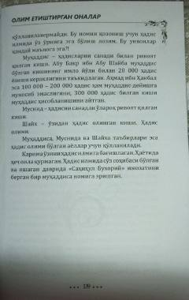

OYIslom tarixidagi buyuk ayol olimalar hayoti va ilmiy merosi haqida.
Bu kitob islom tarixidagi buyuk ayol olimalar — muhaddisalar, faqihalar va ularning ilmiy merosini yoritadi. Kitobda Fotima bint Alouddin Samarqandiya kabi mashhur ayol olimalarning hayoti va ilmiy faoliyati haqida so'z boradi. Muallif ayollarning ilm-fanda tutgan o'rni va ulardan ilm olgan buyuk imomlar haqida ma'lumot beradi.